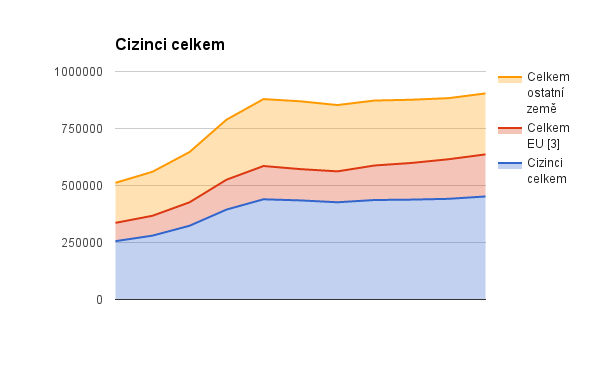
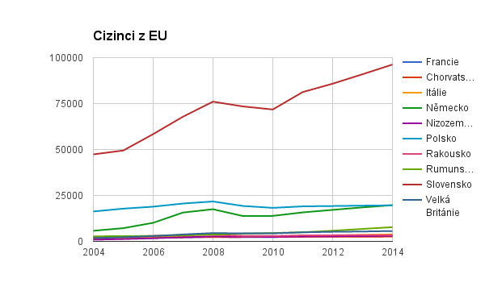
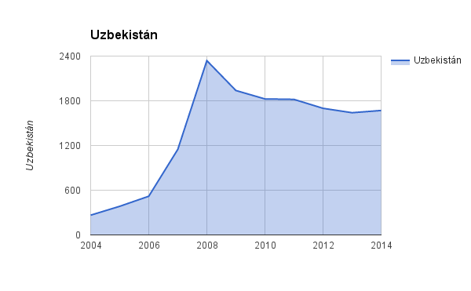

Cleaning data for visualization (Visu homework II.)
Before you can start with any vizualization, you usually need to clean up the data a bit. You will almost never got the data in the exact format and shape which you need. Take my homework as an example - we were suppose to do simple vizualization in Excel, but we got a huge amount of data. This is the original data source which we got:
It comes from the Czech statistical agency, which is pretty standard source of information of stastical nature. Data represents amount of immigrants comming to the Czech Republic from different countries between years 2004 and 2014. It may seem ready for usage but if you take a closer look, you will find several problems:
- There are symbols like “-” which represents an absent value. However this will be treated as string, not as a number so you need to convert this to 0
- There are reduntant lines e.g. 3 row “v tom” which only means “wwithin”
- Some countries has so low numbers of immigrants that they are useless for vizualization
- All records are together, but the first half is from EU countries and the second one from non EU countries
So how to fix that? We do not want to go column by column and fix the issues by hand. We want to that automatically. Lets use Ruby for that! We will need to do:
- read the .xls file into Ruby
- Convert all empty strings and “-” into 0
- Filter only countries which has some significant amount of imigrants (lets say above 10 000)
- Group the data based on their type (total statistics, EU, non EU)
- Count the sums for all the years together (they may come handy)
- Write the results in some format which fits our needs - CSV in this case, because I will be doing visualizations in Excel
Here is the code that does that:
require "spreadsheet"
require "pry"
Spreadsheet.client_encoding = "UTF-8"
# TASK 1
data = Spreadsheet.open "imigranti.xls"
final_data = []
eu = []
non_eu = []
totals = []
counter = 0
data.worksheets[0].each 6 do |row|
row = row.compact
sum = 0
break if row.size < 10
# TASK 4 - we know that after 29 entry there will come non EU countries
if counter <= 29
row[0] = "EU " + row[0]
elsif counter > 29
row[0] = "NON " + row[0]
end
counter += 1
row[1..-1].each do |item|
# TASK 2
item = 0 if item == "-" || item == " " || item == "."
# TASK 5
sum += item
end
# TASK 3
if sum > 10000
# TASK 4 again
if row[0].include?("elkem")
row[0] = row[0][3..-1]
totals << [row, sum].flatten
final_data << [row, sum].flatten
end
# TASK 4 again
if row[0].include?("EU") && !row[0].include?("elkem")
row[0] = row[0][3..-1]
eu << [row, sum].flatten
final_data << [row, sum].flatten
end
# TASK 4 again
if row[0].include?("NON") && !row[0].include?("elkem")
row[0] = row[0][4..-1]
non_eu << [row, sum].flatten
final_data << [row, sum].flatten
end
end
end
# TASK 6
puts totals.map {|x| x.join(",") }.join("\n")
puts
puts eu.map {|x| x.join(",") }.join("\n")
puts
puts non_eu.map {|x| x.join(",") }.join("\n")
puts
The output CSV looks like this:
Cizinci celkem,255917.0,280111.0,323343.0,394345.0,439498.0,434600.0,426423.0,436319.0,438076.0,441536.0,451923.0,4322091.0
Celkem EU [3],80246.0,87144.0,102886.0,131052.0,145974.0,137164.0,135554.0,151425.0,160792.0,173593.0,184511.0,1490341.0
Celkem ostatní země,175671.0,192967.0,220457.0,263293.0,293524.0,297436.0,290869.0,284894.0,277284.0,267943.0,267412.0,2831750.0
Bulharsko [4],4484.0,4586.0,4660.0,5046.0,5945.0,6428.0,6952.0,7461.0,8248.0,9132.0,10058.0,73000.0
Francie,1362.0,1551.0,1869.0,2140.0,2445.0,2278.0,2282.0,2715.0,2933.0,3025.0,3244.0,25844.0
Chorvatsko [5],2034.0,2143.0,2228.0,2327.0,2327.0,2359.0,2425.0,2488.0,2496.0,2490.0,2613.0,25930.0
Itálie,1538.0,1761.0,2011.0,2351.0,2616.0,2558.0,2608.0,2933.0,3197.0,3503.0,3810.0,28886.0
Německo,5772.0,7187.0,10109.0,15700.0,17496.0,13792.0,13871.0,15763.0,17149.0,18507.0,19687.0,155033.0
Nizozemsko,923.0,1260.0,1717.0,2240.0,2604.0,2507.0,2446.0,2681.0,2777.0,2872.0,2946.0,24973.0
Polsko,16265.0,17810.0,18894.0,20601.0,21710.0,19273.0,18242.0,19058.0,19235.0,19452.0,19626.0,210166.0
Rakousko,2080.0,2368.0,3022.0,3373.0,3580.0,2992.0,2924.0,3282.0,3345.0,3400.0,3447.0,33813.0
Rumunsko [4],2752.0,2864.0,2940.0,3298.0,3736.0,4213.0,4531.0,4965.0,5787.0,6777.0,7741.0,49604.0
Slovensko,47354.0,49446.0,58384.0,67889.0,76034.0,73446.0,71780.0,81253.0,85807.0,90948.0,96222.0,798563.0
Velká Británie,1813.0,2235.0,2873.0,3775.0,4512.0,4363.0,4356.0,4924.0,5210.0,5376.0,5647.0,45084.0
Arménie,1246.0,1351.0,1455.0,1624.0,1956.0,2118.0,2183.0,2094.0,1990.0,1926.0,1769.0,19712.0
Bělorusko,3046.0,3191.0,3438.0,3977.0,4123.0,4550.0,4463.0,4418.0,4480.0,4642.0,4743.0,45071.0
Bosna a Hercegovina,1731.0,1697.0,1738.0,2093.0,2442.0,2243.0,2179.0,2204.0,2246.0,2109.0,1910.0,22592.0
Čína,3430.0,3587.0,4165.0,4986.0,5211.0,5359.0,5478.0,5586.0,5607.0,5508.0,5587.0,54504.0
Indie,482.0,543.0,731.0,874.0,979.0,1067.0,1172.0,1193.0,1319.0,1471.0,1658.0,11489.0
Japonsko,994.0,1235.0,1251.0,1484.0,1661.0,1589.0,1521.0,1488.0,1529.0,1557.0,1488.0,15797.0
Kazachstán,2189.0,2289.0,2452.0,3038.0,3447.0,4000.0,4332.0,4613.0,4827.0,5007.0,5181.0,41375.0
Korejská republika,217.0,275.0,347.0,753.0,1314.0,1248.0,1331.0,1413.0,1485.0,1520.0,1517.0,11420.0
Makedonie,1161.0,1218.0,1440.0,1787.0,2155.0,2070.0,1945.0,1880.0,1830.0,1804.0,1838.0,19128.0
Moldavská republika,4087.0,4682.0,6206.0,8038.0,10653.0,10059.0,8877.0,7605.0,6373.0,5684.0,5267.0,77531.0
Mongolsko,2052.0,2435.0,3282.0,6028.0,8571.0,5747.0,5578.0,5387.0,5308.0,5289.0,5464.0,55141.0
Rusko,15032.0,16627.0,18954.0,23690.0,27467.0,30697.0,32203.0,32782.0,33359.0,33415.0,34684.0,298910.0
Spojené státy,3750.0,3952.0,4212.0,4452.0,5272.0,5941.0,6074.0,7317.0,6976.0,7134.0,6476.0,61556.0
Srbsko,.,.,103.0,570.0,1031.0,1584.0,2005.0,2297.0,2438.0,2570.0,2631.0,15229.0
Srbsko a Černá Hora,3505.0,3633.0,3786.0,3615.0,3265.0,2470.0,842.0,887.0,452.0,330.0,257.0,23042.0
Turecko,535.0,655.0,825.0,994.0,1119.0,1231.0,1396.0,1513.0,1508.0,1678.0,1623.0,13077.0
Ukrajina,78301.0,87834.0,102657.0,126799.0,131998.0,132015.0,124367.0,119021.0,112642.0,105239.0,104388.0,1225261.0
Uzbekistán,265.0,384.0,519.0,1148.0,2339.0,1938.0,1825.0,1819.0,1699.0,1640.0,1670.0,15246.0
Vietnam,34248.0,36903.0,40835.0,51159.0,60306.0,61178.0,60350.0,58266.0,57360.0,57406.0,56666.0,574677.0
And the resulting visualizations were just the results of a few clicks in Excel … (Next time look forward visualizations in d3)
  